Artist-and-era chains
Type an artist, pick an era and a role — lead or ad-lib — and the whole chain loads in order: inserts, effect returns and the vocal bus.
v0.5.6 is done · v0.6.0 is next
Search an artist, pick an era, press play. Takelight loads the whole vocal chain — tuning, EQ, compression, de-essing, delays, reverbs and the vocal bus — built from its own modules. Offline and 100% AI-free.
Nothing is for sale yet. From version 1.0, Freally Takelight will be sold as a one-time licence, with a free trial of the whole plugin first.
There are no downloads yet, and the source code is private.
A raw vocal does not sound like a record, and the gap is a chain: tuning, EQs, compressors, a de-esser, delays and reverbs on sends, and a vocal bus, in the right order, at the right settings.
Takelight holds a whole chain for each artist and era inside one plugin, built from its own modules, so you never need another plugin to hear it.
Load a chain and it crossfades in without a click. Shape it with four macros, or open the rack and turn any knob.

Type an artist, pick an era and a role — lead or ad-lib — and the whole chain loads in order: inserts, effect returns and the vocal bus.

Change chains while the track plays. The new chain is made ready away from the audio and crossfaded in over 30 milliseconds, so nothing pops.

One rack holds the whole chain: pitch correction, three kinds of EQ, five kinds of compressor, a de-esser, a gate, saturation, an exciter, lo-fi, a limiter, a doubler, delays, reverbs, four returns and a vocal bus.

Simple shows four macros — Tune, Tone, Space and Amount. Advanced shows every module as rendered hardware, each card drawing what it does — the EQ curve over your vocal, the compressor's curve and what it takes — and every knob can be automated.

CLAP and VST3 on Windows, macOS and Linux, AU on macOS, and a standalone app. Saved with your project, latency reported so your DAW lines everything up, and safe in many instances at once.
No account, no telemetry and no model. The plugin and the app never go online; update checks and licence activation run in a separate helper, only when you ask.
One line per version. This is the same ladder the private plan follows — if one moves, both move, and a build gate compares them.
v0.1.0DoneThe foundation: the plugin loads as CLAP, VST3 and AU and as a standalone app, passes your audio through untouched, asks you to accept its licence, and every quality gate runs.v0.2.0DoneThe Joint: one rack for a whole vocal chain, the first EQ, dynamics and colour modules on rendered hardware, and the take light.v0.3.0DoneSpace: delays, reverbs, doubling, width and the four effect returns, in time with your project.v0.4.0DoneTune: pitch correction from classic signal processing, the key found from your vocal, and a low-latency mode for recording.v0.5.0DoneFirst light: search an artist and an era, and the whole chain loads in one click. The first complete version.v0.5.5DoneInput Check, ad-lib chains, your own presets, and undo.v0.5.6DoneVisual cards: every module shows what it does — the EQ curve over a live spectrum of your vocal, the compressor curve with what it takes — not just knobs.v0.6.0PlannedThe first wave of artist chains, a chain for every genre, and the roster page.v0.7.0PlannedIn every DAW: saved with your project, automatable, its latency reported, and safe in many instances at once.v0.8.0PlannedThe standalone app at full strength, and Takelight on macOS and Linux.v0.9.0PlannedThe second wave of artist chains, and a realism and performance pass.v0.9.5PlannedReference Match: load a reference, and Takelight reads the delays, the reverb, the tone and the rest of its vocal, and proposes them on its own modules.v1.0.0-betaPlannedHardened: installers for three systems, the update check, the trial and the licence, and the full manual. Still no downloads on this site.v1.0.0-rcPlannedThe release candidate: every file reviewed and every host tested by hand.v1.0.0The goalThe release: the free trial, the one-time licence, and the first downloads this site has ever offered.v1.1.0LaterVocal Match: your vocal's tone set against a reference you own.v1.2.0LaterDoubles and harmonies, stacked for you.v1.3.0LaterA third wave of artist chains, and chains sent in by producers.v1.4.0LaterBridges to Freally MIDI Master and Freally Unloop.v1.5.0LaterPro Tools as a plugin (AAX), if Avid's terms allow it.A version that is done is built and tagged. It is not a download: there are none, and there will not be until 1.0.0.
A chain reproduces processing: tuning, EQ, compression, delays and reverbs. Your voice, your microphone, your room and your delivery stay yours, and no preset makes anyone sound like someone else.
A chain is where your vocal starts, not a promise of a sound. Turn the macros, open the rack and make it yours; nothing you change is ever locked.
No beta on this page, no preview build, no early access. Version 1.0 comes with a free trial of the whole plugin and a one-time licence.
The plugin and the standalone app contain no networking code at all, and a build gate fails if any is added. Update checks and licence activation will live in a separate helper that acts only when you ask.
The changelog lists everything that changed in Freally Takelight, version by version, in all eighteen languages.